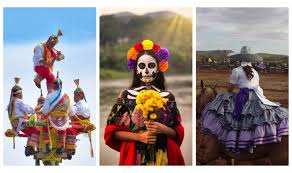
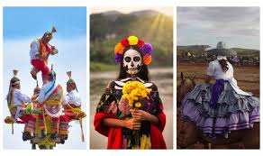

Cultura_inmaterial
Conjunto de aspectos intangibles que forman parte de la identidad cultural de un pueblo: tradiciones, costumbres, conocimientos, creencias, expresiones artísticas, música, danzas, gastronomía y lengua.
No son objetos físicos, pero se transmiten de generación en generación y se mantienen vivos en la práctica social.
Se transmite también en la música y la danza, expresiones que representan sentimientos, identidad y memoria colectiva.
También incluye la lengua, tanto el español como las lenguas originarias.
Abarca además la gastronomía tradicional, reconocida internacionalmente.
 

El Día de Muertos es Patrimonio Cultural Inmaterial de la Humanidad (UNESCO) y refleja la visión mexicana sobre la muerte como una parte natural de la vida. Las fiestas patronales mezclan lo religioso con lo comunitario, mientras que las danzas rituales (como la Danza de los Voladores de Papantla) tienen un origen prehispánico que mantiene viva la relación con la naturaleza y lo sagrado.
La música mexicana es variada y refleja la fusión de influencias indígenas, africanas y españolas. El mariachi es símbolo nacional y se escucha en celebraciones familiares y patrias. El son jarocho, típico de Veracruz, incorpora ritmos afrocaribeños, y el huapango combina zapateado con poesía cantada. Estas expresiones unen a las comunidades y preservan la memoria histórica.
El idioma es uno de los pilares de la cultura inmaterial. En México coexisten múltiples lenguas indígenas junto con el español, lo que enriquece la diversidad cultural. Cada lengua transmite formas de pensar y de interpretar el mundo; por ejemplo, en náhuatl existen términos que no tienen traducción exacta al español porque expresan visiones únicas de la vida.
La comida mexicana es Patrimonio Cultural Inmaterial de la Humanidad. No se trata solo de recetas, sino de un sistema cultural que involucra técnicas (como el nixtamal), rituales (ofrendas de comida en Día de Muertos) y reuniones comunitarias. La gastronomía muestra la fusión indígena y española y es un espacio donde la identidad se mantiene viva día a día.
El Día de Muertos es Patrimonio Cultural Inmaterial de la Humanidad (UNESCO) y refleja la visión mexicana sobre la muerte como una parte natural de la vida. Las fiestas patronales mezclan lo religioso con lo comunitario, mientras que las danzas rituales (como la Danza de los Voladores de Papantla) tienen un origen prehispánico que mantiene viva la relación con la naturaleza y lo sagrado.
La música mexicana es variada y refleja la fusión de influencias indígenas, africanas y españolas. El mariachi es símbolo nacional y se escucha en celebraciones familiares y patrias. El son jarocho, típico de Veracruz, incorpora ritmos afrocaribeños, y el huapango combina zapateado con poesía cantada. Estas expresiones unen a las comunidades y preservan la memoria histórica.
El idioma es uno de los pilares de la cultura inmaterial. En México coexisten múltiples lenguas indígenas junto con el español, lo que enriquece la diversidad cultural. Cada lengua transmite formas de pensar y de interpretar el mundo; por ejemplo, en náhuatl existen términos que no tienen traducción exacta al español porque expresan visiones únicas de la vida.
La comida mexicana es Patrimonio Cultural Inmaterial de la Humanidad. No se trata solo de recetas, sino de un sistema cultural que involucra técnicas (como el nixtamal), rituales (ofrendas de comida en Día de Muertos) y reuniones comunitarias. La gastronomía muestra la fusión indígena y española y es un espacio donde la identidad se mantiene viva día a día.